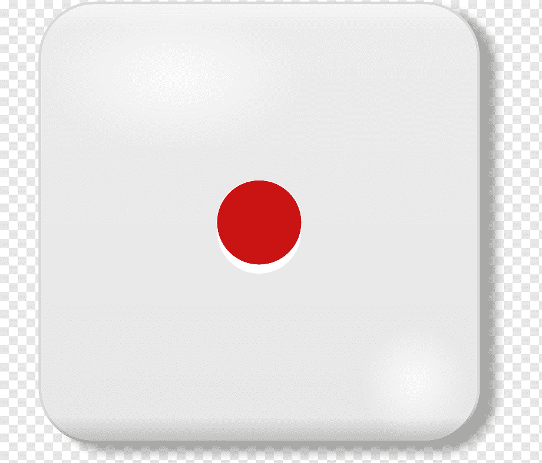

Realiza una página que simule el lanzamiento de un dado.
Ayuda: Créate con el paint 6 imagenes, cada imagen será la cara de un dado.
Inserta un botón que al pulsar busque un número aleatorio del 1 al 6 y muestre la cara correspondiente

Tirar el dado